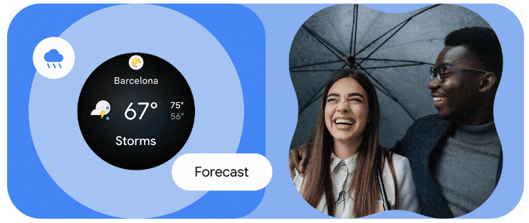
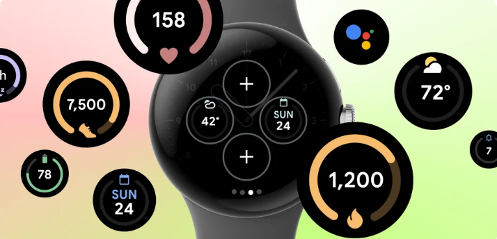

5 ways you can personalize your smartwatch with Wear OS
An ultimate guide to getting the most personalized smartwatch experience with at-a-glance features like watch faces, tiles, complications and more.
Here are some of the ways you can
personalize your watch
1.Make it yours with a unique watch face.
For an even greater variety, you can turn to watch face platforms like Facer. Whether you're a fan of classic watch styles, futuristic sci-fi themes or your favorite movie franchise, Facer has a watch face to match your interests. This platform opens up a world of possibilities and regularly publishes more designs, like their new animated 3D collection, which is exclusively available on Wear OS watches
2. Interact with apps in new ways with customizable tiles.
Tiles provide at-a-glance updates, such as weather forecasts, fitness stats and calendar events, and are accessible with a simple swipe left or right from your watch face. You can easily navigate through your tiles, stay informed and take immediate action without having to dive into separate apps and take you away from people and moments that matter most.
3.See the information you need at a glance with complications.
Complications are additional snippets of information displayed right on your watch face, such as activity tracking, battery life, media controls and more. They enhance the usefulness of your watch and can be customized to suit your preferences. Explore the available complications and choose the ones that align with your daily needs. Prioritize the information that matters most to you, whether it's step count, heart rate or upcoming appointments.
 Read More